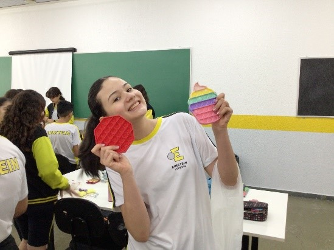
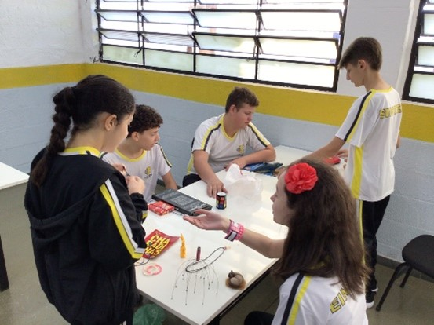
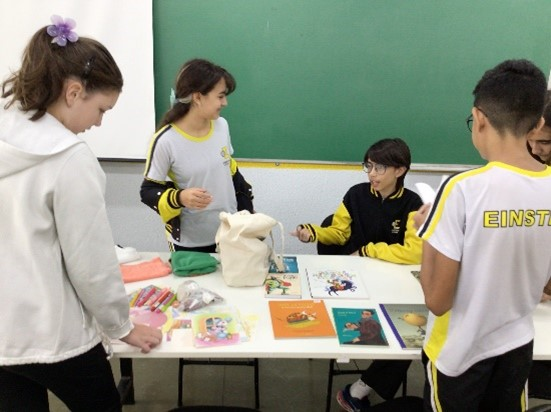
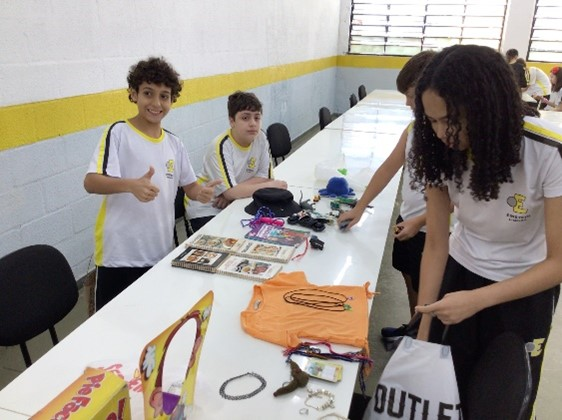

Mergulhe no fascinante mundo da prática
por Luís Antônio Cezario Hernandes
Você já imaginou poder colocar a teoria em prática e ver com seus próprios olhos como tudo funciona? Nas aulas práticas em laboratório, isso se torna realidade! Imagine a emoção de formular suas próprias hipóteses e testá-las, descobrindo respostas surpreendentes.
As aulas práticas não apenas fixam o conteúdo estudado, mas também o tornam extremamente útil e relevante. Ao entrar em contato com o mundo físico e suas maravilhas, você cria conexões emocionantes entre a teoria e a realidade. Cada experimento é uma jornada de descobertas que ficará marcada em sua memória para sempre.
Além disso, ao refletir sobre seu próprio desempenho, identificar áreas de melhoria e estabelecer metas realistas ajuda os alunos a progredirem continuamente. Pedir feedback a professores e colegas também é uma ótima estratégia.
Sob a supervisão da professora Cláudia Bertasso foram várias as práticas realizadas no primeiro semestre, deixo aqui alguns momentos.
 